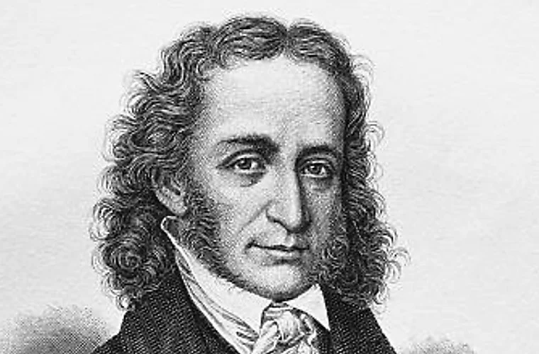

Личная жизньПаганини не состоял в официальном браке, однако у него были длительные отношения с певицей Антонией Бьянки. В 1825 году у них родился сын Ахилл, к которому музыкант был очень привязан. Рождение сына стало важным событием в личной жизни композитора. После расставания с Антонией Паганини добился того, чтобы сын остался с ним. Ахилл сопровождал отца в последние годы его жизни и поддерживал его в трудные периоды. Несмотря на славу и успех, Паганини сталкивался с серьёзными проблемами со здоровьем. Изнурительные гастроли и болезни постепенно ослабляли его организм. За образом великого виртуоза скрывалась личная жизнь, полная испытаний и переживаний Никколо Паганини (1782–1840) |
|
 Никколо Паганини — великий скрипач-виртуоз |